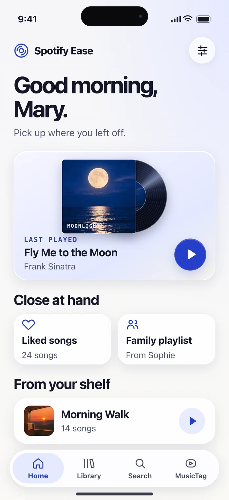
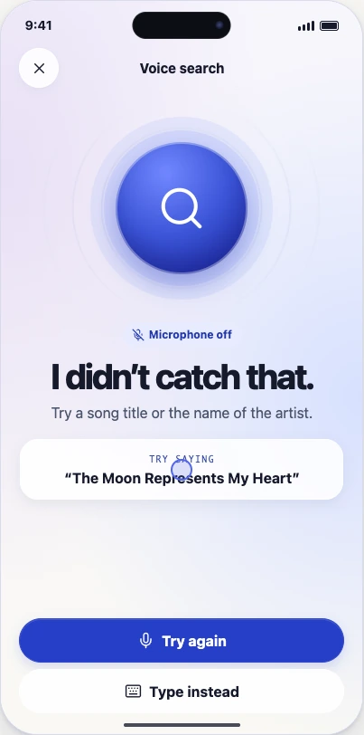
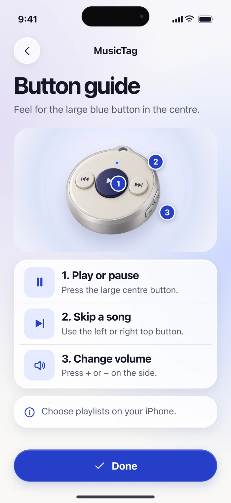

Independent product design · Katherine Lin
The Listening Room.
An accessible music experience for older listeners, built around familiar songs, recoverable voice search and tactile playback.
- Project framing
- Independent product design brief
- My contribution
- Desk research, two interviews, experience rationale, prototype and evaluation plan
- Deliverable
- Interactive iOS concept and MusicTag simulation
Product decision
Make it easy to get back to a song.
In my two interviews, familiar music was part of ordinary routines. When a saved playlist moved or a voice command returned the wrong result, the listener could lose the moment and have to ask for help. I designed around getting back to music independently.
Keep familiar music close
Give recent playback, saved songs and family playlists predictable homes.
Make voice errors recoverable
Show when listening is active, surface a result for review and keep typing one action away.
Separate control from output
Choose songs and speakers on the phone. Use MusicTag for playback and volume.



AI interaction design
Keep the listener in control of recognition.
The design separates recognition, catalogue matching and playback. An unclear result leads to retry or typing. A plausible match is shown before the user chooses what to play. I defined the behaviour, failure states and measures for testing recovery across languages and accents.
Portfolio evidence